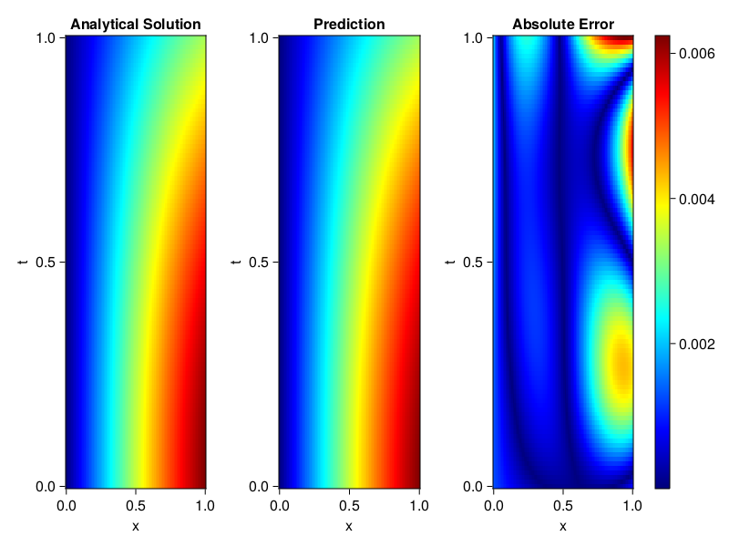
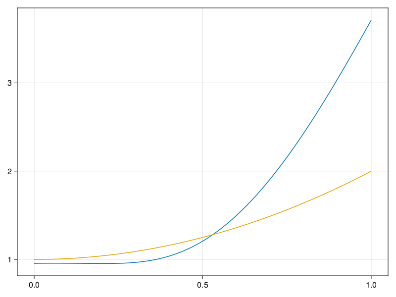

Inverse problem for the wave equation with unknown velocity field
We are going to sovle the wave equation.
using Sophon, ModelingToolkit, IntervalSets
using Optimization, OptimizationOptimJL
@parameters x, t
@variables u(..), c(..)
Dₜ = Differential(t)
Dₜ² = Differential(t)^2
Dₓ² = Differential(x)^2
s(x,t) = abs2(x) * sin(x) * cos(t)
eq = Dₜ²(u(x,t)) ~ c(x) * Dₓ²(u(x,t)) + s(x,t)
bcs = [u(x, 0) ~ sin(x),
Dₜ(u(x, 0)) ~ 0,
u(0, t) ~ 0,
u(1, t) ~ sin(1) * cos(t)]
domains = [t ∈ Interval(0.0, 1.0),
x ∈ Interval(0.0, 1.0)]
@named wave = PDESystem(eq, bcs, domains, [t,x], [u(x,t),c(x)])\[ \begin{align} \frac{\mathrm{d}}{\mathrm{d}t} \frac{\mathrm{d}}{\mathrm{d}t} u\left( x, t \right) =& c\left( x \right) \frac{\mathrm{d}}{\mathrm{d}x} \frac{\mathrm{d}}{\mathrm{d}x} u\left( x, t \right) + \cos\left( t \right) \left|x\right|^{2} \sin\left( x \right) \end{align} \]
Here the velocity field $c(x)$ is unknown, we will approximate it with a neural network.
pinn = PINN(u = FullyConnected((2,16,16,16,1), sin),
c = FullyConnected((1,16,16,1), tanh))
sampler = QuasiRandomSampler(500,100)
strategy = NonAdaptiveTraining(1, (10,10,1,1))NonAdaptiveTraining{Int64, NTuple{4, Int64}}(1, (10, 10, 1, 1))Next we generate some data of $u(x,t)$. Here we place two sensors at $x=0.1$ and $x=0.5$.
ū(x,t) = sin(x) * cos(t)
x_data = hcat(fill(0.1, 1, 50), fill(0.5, 1, 50))
t_data = repeat(range(0.0, 1.0, length = 50),2)'
input_data = [x_data; t_data]
u_data = ū.(x_data, t_data)1×100 Matrix{Float64}:
0.0998334 0.0998126 0.0997503 0.0996464 … 0.275281 0.267213 0.259035Finally we construct the inverse problem and solve it.
additional_loss(phi, θ) = sum(abs2, phi.u(input_data, θ.u) .- u_data)
prob = Sophon.discretize(wave, pinn, sampler, strategy; additional_loss=additional_loss)
@time res = Optimization.solve(prob, BFGS(), maxiters=1000)u: ComponentVector{Float64}(u = (layer_1 = (weight = [0.2558529802462653 0.7867761160370296; -1.0241817250773786 -0.15149366338057832; … ; 0.3999372044139822 -0.06224067134411449; 0.11162906082669444 0.965111760710629], bias = [0.11254161234028197; -0.2158980986993171; … ; -0.0009191493369896776; -0.34236271460445855;;]), layer_2 = (weight = [0.1468939259838711 0.1125388233379239 … -0.44087918058051195 -0.30388513781481863; -0.31727257189624736 0.10231172764545901 … 0.0972335758951538 0.15951009594262075; … ; -0.08812216800391963 -0.3282831381037645 … -0.40860513095532736 0.32551336509338885; 0.37831030543198446 0.2160742802844922 … 0.7137542113028713 -0.19406610321389203], bias = [-0.18764334581660794; 0.10044379268878008; … ; 0.12942257300761195; 0.046384688237872694;;]), layer_3 = (weight = [0.34480814282884287 0.41686777187842833 … -0.43673810876212477 -0.1963353385990768; -0.487927177641547 0.6088467330487028 … -0.04724626295968695 0.38824674198897147; … ; 0.19895179038598934 -0.5957541853850631 … -0.3835600204124927 0.18562745723368618; 0.42849367187009924 0.35163225271029386 … -0.06660033967187746 0.25071032062175774], bias = [-0.1323887858334609; 0.045243217568416746; … ; 0.027349670492881596; 0.19993534788357017;;]), layer_4 = (weight = [-0.1192081022121085 -0.21845979791905804 … 0.4857581128723977 0.10680491665692847], bias = [-0.23296872685127773;;])), c = (layer_1 = (weight = [-2.559356993284728; -1.2135186914231182; … ; -0.7608559165561392; -2.4129192710091587;;], bias = [-0.07516745679101357; 0.8962934666393748; … ; 0.12455691873306117; -0.4380615644376367;;]), layer_2 = (weight = [-0.0014630476685781818 -0.44700607992704305 … 0.10097701386732247 0.16070422580192367; 0.617379889353492 0.08833434109163497 … 0.4537312634775063 -0.42384236700122313; … ; -0.4229891878104914 -0.3833371041592959 … 0.5118569482997877 -0.6389093405308197; -0.139080022844833 -0.6332915261619103 … -0.1654730171298904 0.30929222878466484], bias = [-0.46143949250727256; 0.2067956267283513; … ; 0.003466024145226469; -0.06810825921281355;;]), layer_3 = (weight = [-1.872728404043058 0.41118228249590677 … 0.0228603072891061 -0.17928312932978235], bias = [0.7192030509809811;;])))Let's visualize the predictted solution and inferred velocity
using CairoMakie
ts = range(0, 1; length=100)
xs = range(0, 1; length=100)
u_pred = [pinn.phi.u([x, t], res.u.u)[1] for x in xs, t in ts]
c_pred = [pinn.phi.c([x], res.u.c)[1] for x in xs]
u_true = [ū(x, t) for x in xs, t in ts]
c_true = 1 .+ abs2.(xs) |> vec
axis = (xlabel="x", ylabel="t", title="Analytical Solution")
fig, ax1, hm1 = heatmap(xs, ts, u_true, axis=axis; colormap=:jet)
ax2, hm2= heatmap(fig[1, end+1], xs, ts, u_pred, axis= merge(axis, (;title = "Prediction")); colormap=:jet)
ax3, hm3 = heatmap(fig[1, end+1], xs, ts, abs.(u_true .- u_pred), axis= merge(axis, (;title = "Absolute Error")); colormap=:jet)
Colorbar(fig[:, end+1], hm3)
fig
fig, ax = lines(xs, c_pred)
lines!(ax, xs, c_true)
fig